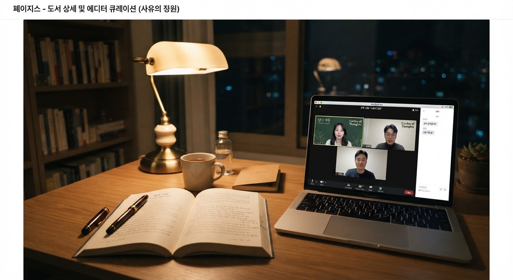
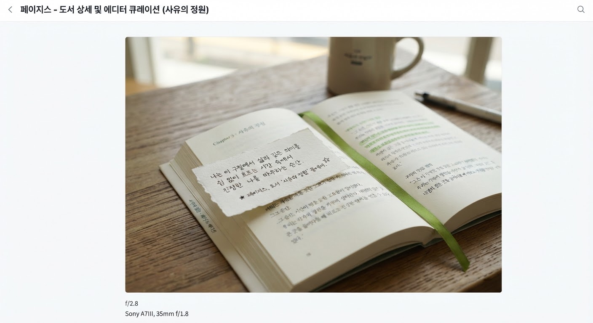

“
“불안은 결코 당신이 부족해서 찾아오는 불청객이 아니다. 세상을 너무 깊이 감각하고 있다는, 정직한 영혼의 맥박이다.”
제1부 · 고요함을 마주하는 용기 (p. 42)
“빠르게 흘러가는 세상에서 멈추어 서서 나만의 고유한 리듬을 되찾는 철학적 사유의 기록”
[서촌 살롱] 정하온 작가 직강 4주 완독 북클럽 모집 중
책 구매 회원 전용 북클럽 15,000원 즉시 할인 쿠폰 제공
페이지스를 관통하는 사색의 문장들. 마음에 남는 구절을 클릭하여 나만의 서재에 담아보세요.
“불안은 결코 당신이 부족해서 찾아오는 불청객이 아니다. 세상을 너무 깊이 감각하고 있다는, 정직한 영혼의 맥박이다.”
“타인의 시선이라는 거울을 깨뜨릴 때 비로소 드러나는 나의 정원은, 생각보다 한적하고 충분히 아름답다.”
“속도를 늦추는 것은 뒤처지는 것이 아니라, 흩날려버린 일상의 미세한 기쁨들을 한 줌씩 주워 담는 행위다.”
끝없는 성취와 속도 경쟁에 떠밀려 숨 가쁜 하루를 보내는 현대인들에게, 가장 절실한 것은 새로운 해결책이 아닌 ‘잠시 멈추어 서서 숨을 고를 수 있는 안전한 영토’입니다.
현대 철학자 정하온의 신작 《사유의 정원》은 스토아철학의 담담한 지혜와 현대 실존주의 사유를 일상의 결 위에 섬세하게 수놓은 에세이입니다. 저자는 우리가 매일 겪는 정체불명의 조급함, 관계에서의 피로감, 타인의 평가에 휘둘리는 취약성을 냉정하게 단죄하지 않습니다. 대신 그늘진 정원에 벤치를 놓아주듯 따스한 문장으로 독자의 굳은 마음을 어루만집니다.
“우리가 불안해질 때마다 책장에 꽂아두고 한 장씩 꺼내먹어야 할 문장 비타민 같은 책입니다. 침대 곁 협탁에 두고 잠들기 전 10분, 당신의 마음을 정화하는 리추얼로 추천합니다.”
이 특별 한정판 양장본은 부드러운 촉감의 천연 패브릭 하드커버와 장기 보관에 최적화된 중성 미색지를 채택하여, 물리적인 책장을 넘기는 경험 그 자체로 명상이 되도록 정성스럽게 제작되었습니다.
왜 우리는 아무것도 하지 않을 때 죄책감을 느끼는가
정원은 언제나 그 자리에서 당신을 기다립니다
철학자 · 에세이스트 · 페이지스 살롱 마스터
“우리는 외부 세상의 소음에는 기민하게 반응하면서, 내면에서 들려오는 가녀린 소리에는 너무나 인색합니다. 이 책은 여러분에게 무언가를 더 성취하라고 다그치지 않습니다. 그저 당신의 영혼이 기대어 쉴 수 있는 가장 정갈한 사유의 정원을 선물하고 싶었습니다.”
에디터의 테이스팅 노트 (Reading Mood)
얼그레이 홍차 & 샌달우드
해질녘 18:00 또는 늦은 밤
안도감, 명료함, 다정함
 저자 직강 살롱
모집 마감 임박 (잔여 2석)
저자 직강 살롱
모집 마감 임박 (잔여 2석)
정하온 작가와 함께 매주 한 부씩 깊이 있게 발췌 낭독하고, 일상의 불안을 다스리는 사유의 노트를 나눕니다.

온라인 밋업 선착순 12명한 주를 마무리하며 마음을 다잡는 심야 북클럽. 조용한 필사와 30분 나눔으로 월요일을 차분하게 준비합니다.

퇴근길 지하철에서 매일 불안감에 짓눌려 살았는데, 책 속에서 ‘불안은 세상을 정직하게 감각하고 있다는 증거’라는 문장을 읽고 지하철 안에서 울컥했습니다. 단순히 감정적인 위로를 넘어 철학적인 논리와 단단한 문장으로 삶을 지탱해 주는 책입니다. 양장본 표지 패브릭 질감도 고급스러워 소장 가치가 충분합니다.
책을 먼저 읽고 너무 좋아서 작가님이 직접 하시는 서촌 북클럽까지 등록했습니다. 2부의 ‘타인의 시선에서 벗어나기’ 챕터는 SNS 피로도에 지쳐있는 사람이라면 반드시 형광펜을 긋고 외워야 합니다. 활자의 간격과 종이 냄새마저 완벽한 에디토리얼 마스터피스입니다.